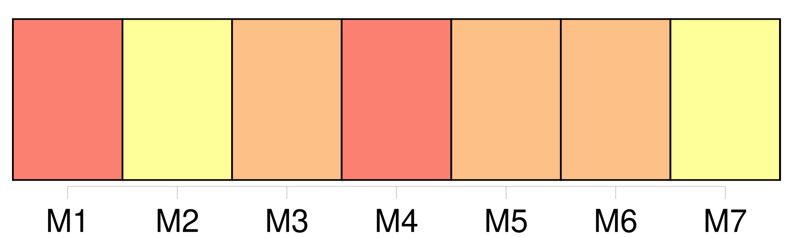
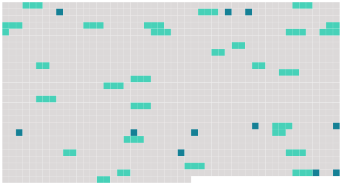

Longueur nb maillons : 39 mentions |
  |
Section 7 : [Des gardes particuliers]
Lorsque le commettant retire la commission d' [un garde particulier] qu' [il] emploie, [il] en informe sans délai le préfet qui met fin à l'agrément. [1 phrases]
Cette demande comprend : Lorsque [le garde particulier] intervient sur les territoires de plusieurs propriétaires ou titulaires de droits d'usage, chacun d'eux dépose une demande dans les conditions fixées ci-dessus. [1 phrases]
Article R15-33-26
L'aptitude technique de la personne qui souhaite exercer les fonctions de [garde particulier] est constatée par arrêté du préfet du département où la formation a été suivie ou, lorsque le demandeur appartient à une des catégories de personnes pour lesquelles aucune formation n'est exigée, par arrêté du préfet du département de son domicile ou du département dans lequel elle envisage d'exercer ses fonctions. S'il estime que les éléments produits justifient de l'aptitude à l'accomplissement des missions de [garde particulier] , le préfet prend, par arrêté, une décision reconnaissant l'aptitude technique du demandeur à exercer, dans les domaines fixés par l'arrêté, les fonctions de [garde particulier] [3 phrases]
Article R15-33-27-1
L'arrêté d'agrément indique la nature des infractions que [le garde particulier] est chargé de constater, dans les limites des droits dont dispose le commettant et en application des dispositions législatives qui l'y autorisent. [1 phrases]
Le commettant délivre [au garde particulier] une carte d'agrément qui comporte les mentions prévues par arrêté conjoint du ministre de l'intérieur et des ministres intéressés. [3 phrases] En cas de rejet de la demande de renouvellement, le commettant et [le garde particulier] doivent, préalablement à la décision, avoir été mis à même de présenter, devant le préfet ou le fonctionnaire que celui -ci délègue à cet effet, leurs observations écrites ou, sur leur demande, des observations orales. [1 phrases]
Article R15-33-29 [4 phrases]
Article R15-33-29-1
[Il] doit également faire figurer de manière visible sur [ses] vêtements la mention, selon la mission confiée, de " [garde particulier] " ou " garde-chasse particulier " ou " garde-pêche particulier " ou " garde des bois particulier ", à l'exclusion de toute autre.
[Les gardes particuliers] ne peuvent porter aucune arme, à l'exception de celles nécessaires à la destruction des animaux nuisibles dans les conditions prévues à l'article R. 427-21 du code de l'environnement. [1 phrases]
Article R15-33-29-2 Le commettant et [le garde particulier] doivent, préalablement à la décision, avoir été mis à même de présenter, devant le préfet ou le fonctionnaire que celui -ci délègue à cet effet, leurs observations écrites ou, sur leur demande, des observations orales. [1 phrases] En cas d'urgence et pour des motifs d'ordre public, le préfet peut suspendre à titre conservatoire l'agrément [du garde particulier] , pour une durée maximale de trois mois, par décision motivée. [1 phrases]
Le préfet informe le commettant et le président du tribunal d'instance auprès duquel [le garde] a prêté serment de la suspension ou du retrait de l'agrément. Le commettant est tenu d'informer sans délai le préfet lorsque [le garde particulier] [qu'] il emploie [cesse] de remplir une ou plusieurs des conditions prévues à l'article 29-1 ou lorsque [celui -ci] ne respecte pas les dispositions de l'article R. 15-33-29-1. |
 |
La ressource peut être téléchargée sur la page Ortolang
Si vous avez des questions ou vous voyez des erreurs, merci d'envoyer un mail à silvia.federzoni89@gmail.com
Site développé par S. Federzoni (contact)